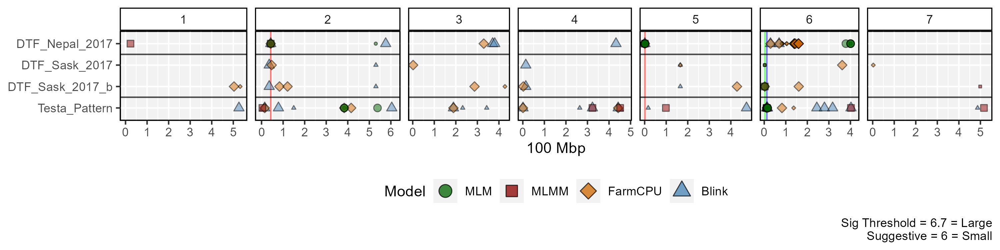
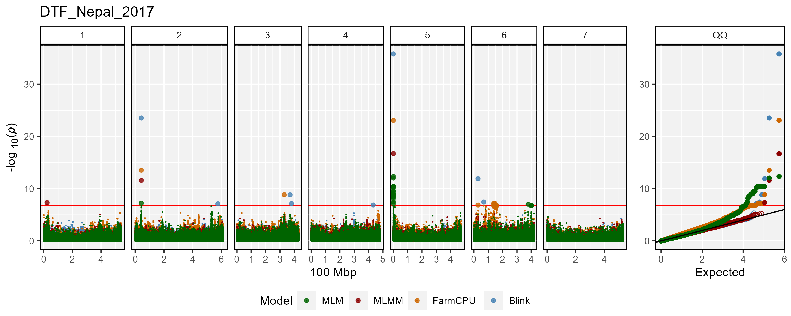
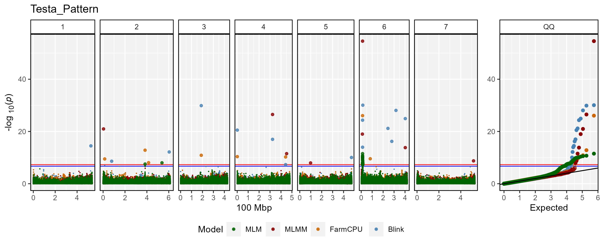
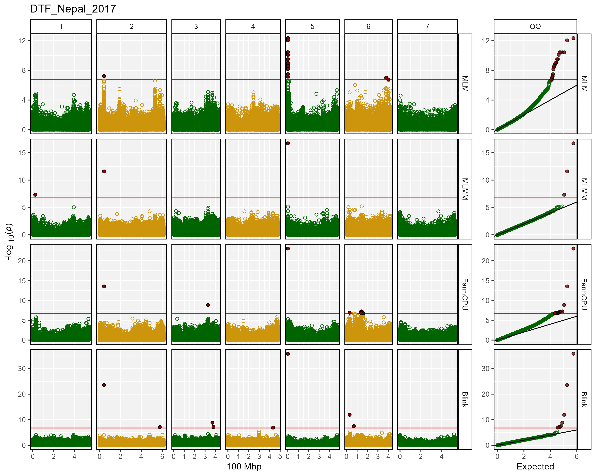
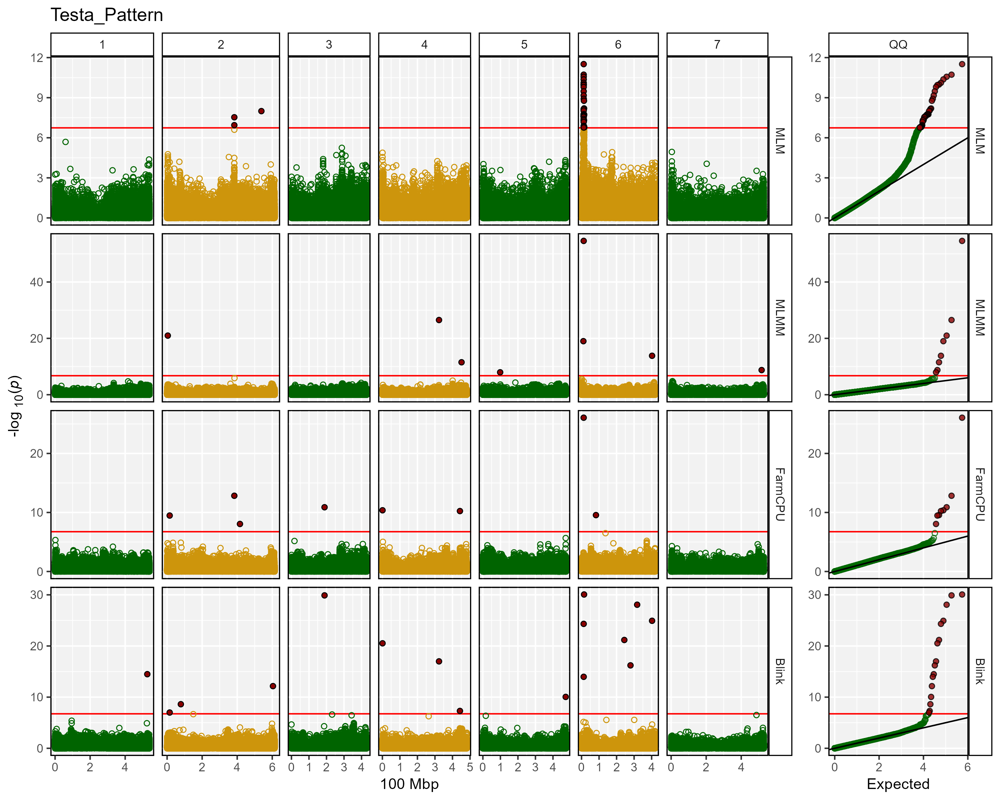

Usage
For best practice, output from GAPIT should be in its own folder. In this case, they are located in a folder called GWAS_Results/. For this example we will plot GWAS results from two traits in a lentil diversity panel:
- Testa_Pattern: a qualitative trait describing the presence or absence of seed coat pigmentation.
- DTF_Nepal_2017: a quantitative trait describing days from sowing to flowering in a 2017 Nepal field trial.
Note: for more info check out this GWAS tutorial.
myTraits <- list_Traits(folder = "GWAS_Results/")
myTraits
myResults <- list_Result_Files(folder = "GWAS_Results/")
myResults## [1] "GAPIT.Blink.DTF_Nepal_2017.GWAS.Results.csv"
## [2] "GAPIT.Blink.Testa_Pattern.GWAS.Results.csv"
## [3] "GAPIT.FarmCPU.DTF_Nepal_2017.GWAS.Results.csv"
## [4] "GAPIT.FarmCPU.Testa_Pattern.GWAS.Results.csv"
## [5] "GAPIT.MLM.DTF_Nepal_2017.GWAS.Results.csv"
## [6] "GAPIT.MLM.Testa_Pattern.GWAS.Results.csv"
## [7] "GAPIT.MLMM.DTF_Nepal_2017.GWAS.Results.csv"
## [8] "GAPIT.MLMM.Testa_Pattern.GWAS.Results.csv"Summary Plot
mp <- gg_GWAS_Summary(folder = "GWAS_Results/", traits = myTraits,
threshold = 7.3, threshold2 = 6.7)
ggsave("man/figures/GWAS_Summary.png", mp, width = 10, height = 2)
Manhattan Plots
for(i in myTraits) {
mp <- gg_Manhattan(folder = "GWAS_Results/", trait = i, facet = F,
threshold = 7.3, threshold2 = 6.7)
ggsave(paste0("man/figures/Multi_",i,".png"), mp, width = 10, height = 4)
}

for(i in myTraits) {
mp <- gg_Manhattan(folder = "GWAS_Results/", trait = i, facet = T,
threshold = 7.3, threshold2 = 6.7)
ggsave(paste0("man/figures/Facet_",i,".png"), mp, width = 10, height = 8)
}

Dependancies
tidyverse, ggpubr, ggbeeswarm, ggrepel, ggtext, plotly, htmlwidgets
© Derek Michael Wright www.dblogr.com/